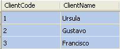
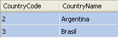
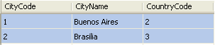
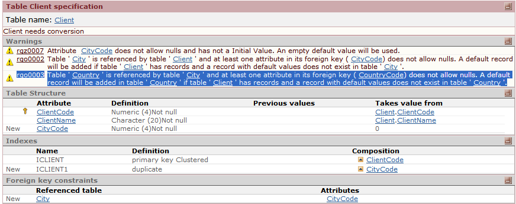
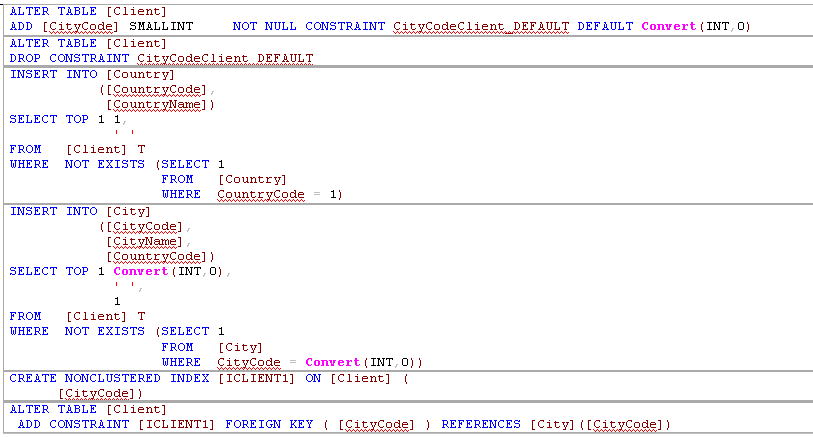
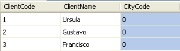
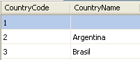
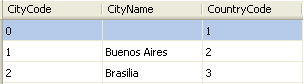

|
rgo0003 |
Table ' Country ' is referenced by table ' City ' and at least one attribute in its foreign key ( CountryCode) does not allow nulls. A default record will be added in table ' Country ' if table ' Client ' has records and a record with default values does not exist in table ' Country '. . |
Rgo0003 Example
Trn Client
ClientCode*
ClientName |
Trn Country
CountryCode*
CountryName |
Trn City
CityyCode*
CityName
CountryCode // FK |
| <v:shapetype coordsize="21600,21600" filled="f" id="_x0000_t75" o:preferrelative="t" o:spt="75" path="m@4@5l@4@11@9@11@9@5xe" stroked="f"></v:shapetype> |
 |
 |
The reorganization consists in adding the not nullable CityCode attribute to the Client Transaction. The CityCode has not initial value, and the CountryCode has initial value=1. So the Client transaction structure is now like follows:
Trn Cient
ClientCode*
ClientName
CityCode
The Impact Analysis report is:

And the generated SQL Statements to run in this reorganization are:

As a result of executing this reorganization, the tables and records are:
Trn Client
ClientCode*
ClientName
CityCode |
Trn Country
CountryCode*
CountryName |
Trn City
CityyCode*
CityName
CountryCode // FK |
| <v:shapetype coordsize="21600,21600" filled="f" id="_x0000_t75" o:preferrelative="t" o:spt="75" path="m@4@5l@4@11@9@11@9@5xe" stroked="f"></v:shapetype> |
 |
 |
NOTE: In case the attributes CityCode or CountryCode are autonumber, the reorg must disable this property before doing the corresponding insert, and setting it back after these inserts.
|